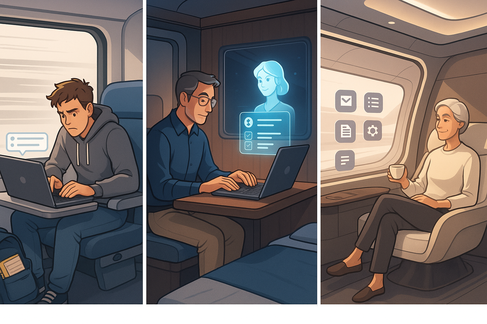
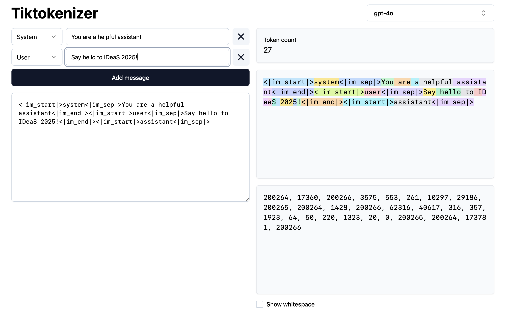
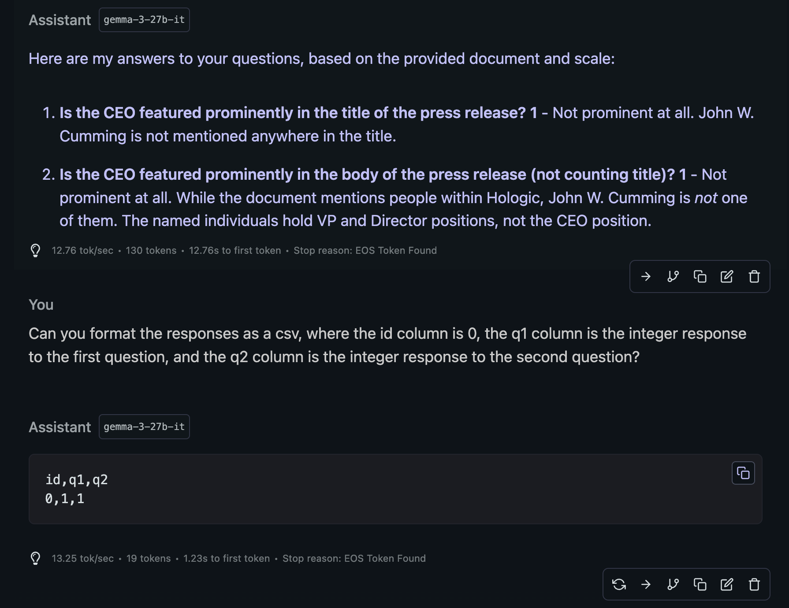
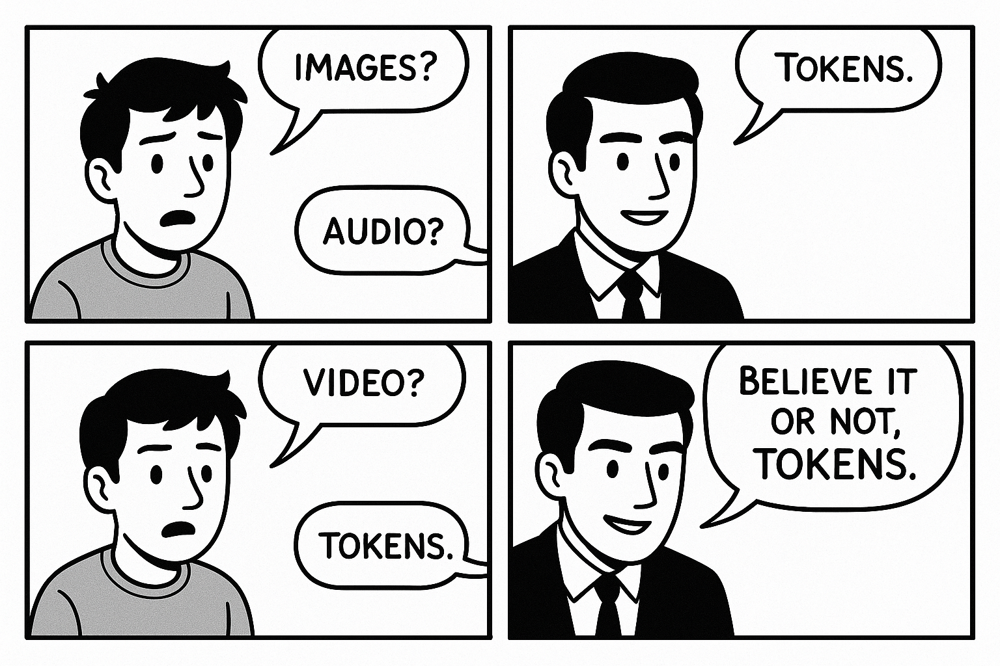

Endless Tokens in Your Own Arcade
Local LLMs for Research
Jason T. Kiley ![]()
2025-05-01
Overview
Evocative terms
We hear a lot of human-like terms used to describe LLMs:
- Intelligent
- Creative
- Reasoning
- Learning
- Knowing
- Hallucinating
Not really!
Questions
- How do LLMs really work?
- Why are Local LLMs interesting?
- How do I get started with Local LLMs?
- Where is all of this headed?
My Approach
- Moderately skeptical. I’ve been through the tech hype cycle before.
- Technical deep dive. I went fairly deep into the technical details of LLMs.
- Guest-edited papers for ORM. We have some interesting submissions using LLMs for our feature topic.
My Usage
- Much experimentation, from GUI tools to integrated LLM applications.
- Prototyped tools in Python that search custom data and code measures.
- Wrote a story for my four-year-old daughter.
- Vibe-coded a usable start to a web app with new-to-me framework.
- A lot of iteration for this presentation.
Hype Train

How do LLMs really work?
LLM training
Big industry players train LLMs on massive datasets, over weeks or months.
| Step | Description |
|---|---|
| Data Collection | Gather large-scale text data from diverse sources (e.g., books, websites). |
| Pre-training | Train the model on a self-supervised task (e.g., next-token prediction). |
| Fine-tuning | Adapt the pre-trained model to specific tasks or domains using labeled data. |
LLM use at a high level
- Text is tokenized and embedded.
- Embeddings are fed into a neural network that predicts the next token.
- The predicted token is added to the input sequence, and the process repeats until a stopping condition is met.
- Along the way the model detokenizes the tokens and generates text, which is streamed to the user.
Providing input to LLMs
The context window is the input to the model.
| Component | Description |
|---|---|
| System Prompt | A predefined instruction or configuration that guides the model’s behavior. |
| User Prompt | The input provided by the user, such as a question, command, or text. |
| Model Output | Tokens generated by the model so far, appended to the input during inference. |
| Conversation History | Previous exchanges (user inputs and model responses) to maintain context. |
| Special Tokens | Tokens used to separate or identify different parts of the input (e.g., <|endoftext|>). |
Tiktokenizer

Why are Local LLMs interesting?
Local LLMs: Advantages
- Privacy. Nothing leaves your machine.
- Cost. No need to pay for API calls or wait for account limits.
- Customization. Fine-tune the model on your own data.
- Integration. Easier to integrate with other local tools and workflows.
Local LLMs: Trade-offs
- Performance. Local models are generally not as powerful as cloud-based ones.
- Hardware Requirements. Depending on what you have already, it may be expensive to buy hardware.
- Technical Complexity. Setting up custom workflows can be challenging.
- Tools and Agents. Cloud-based models often have built-in tools like web search that they can use automatically.
How do I get started with Local LLMs?
Terms
- Parameters. The number of weights in the model. More parameters = more powerful.
- Quantization. Reducing the precision of the model’s weights to save memory and improve performance.
- GPU Offloading. Using the GPU to speed up model inference.
- Distillation. A process to create a smaller, faster model from a larger one.
- Instruct models. The result of fine-tuning a base model to follow user instructions more effectively (i.e. be a chatbot).
Starting easy
- Use LM Studio. It’s a GUI tool that makes it easy to run LLMs locally.
- Use a recommended model. At the moment, Gemma 3 and QwQ are good choices.
- Full offloading. Choose a model that fits in your machine’s memory. Look for 🚀.
- Complement with cloud. Use cloud-based model free account tiers for comparison.
Going deeper
- Hardware.
- Apple Silicon Macs. Start with what you have, and 36-64GB of RAM is the sweet spot.
- NVIDIA GPUs. Performance is faster, but memory capacity above 16GB is very expensive.
- Pair with cloud. Paid cloud accounts are less expensive than hardware and pair nicely.
- Software.
- Agno. Lightweight framework for building LLM applications.
- Atomic Agents. A more developer-oriented framework.
- Unsloth. Used for fine-tuning. Watch for hardware requirements.
- Fast moving. This space is changing rapidly, so explore widely before going too deep.
Usage advice
- Start with the context window. Give the LLM some data and ask it to do something.
- Validate. It’s the same as any other process we give input to and receive output from.
- Embrace randomness. LLMs are not deterministic, so try multiple runs.
- Try everything. Build intuition for what works and what doesn’t.
Example

Where is all of this headed?
LLMs
- Stable foundations. Embeddings, pre-training, and standard fine-tuning are relatively well-settled.
- Reinforcement learning. Use reward system to improve model performance.
- Verifiable tasks. For example, running code and mathematical correctness.
- Human feedback (RLHF). Use human feedback to improve model performance, but it’s limited in effect.
- Tools and agents. LLMs can be augmented with tools (e.g., web search) and agents that decompose tasks and use tools to accomplish them.
Data types
- Images?
- Audio?
- Video?
- Believe it or not, tokens!

Not great. 😬Key takeaways
- Tokens. It’s all next tokens. The magic is that it works at all.
- Local LLMs. Private, performant, and priced right.
- Capable and growing. You can do a lot today with local LLMs, and advancements are rapid and significant.